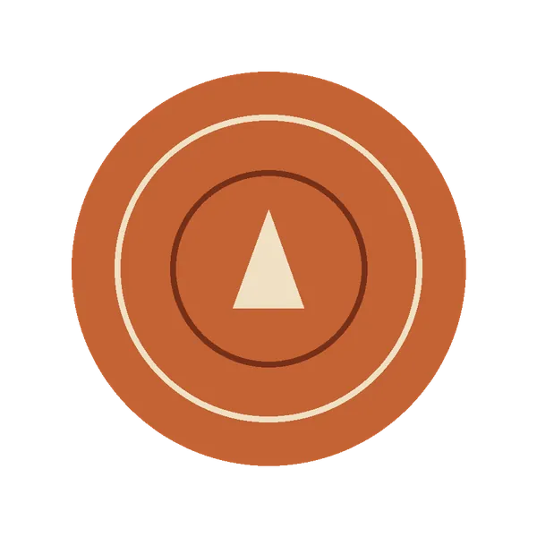

Role para girar a peça.
O disco abaixo não é 3D em tempo real: são 36 imagens trocadas conforme a rolagem. Leve, nítido e igual em todo aparelho.
Disco de teste

Fim do giro.
Depois do trecho fixo a página continua normalmente.
O disco abaixo não é 3D em tempo real: são 36 imagens trocadas conforme a rolagem. Leve, nítido e igual em todo aparelho.

Depois do trecho fixo a página continua normalmente.